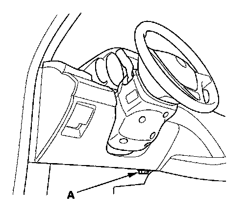

Troubleshooting - B-CAN System Diagnosis Test Mode A
Troubleshooting - B-CAN System Diagnosis Test Mode ACheck the PCM for DTCs and troubleshooting PCM or F-CAN loss of communication errors first, then perform this diagnosis if the symptom is related to the B-CAN system.
Perform this diagnosis first if the symptom is related to the B-CAN system.
NOTE: Always turn the ignition switch within 3 seconds when prompted in the DTC troubleshooting procedures in this section.
1. Check the symptom against this list of B-CAN related systems:
- Gauge control module
- Exterior lights
- Turn signals
- Entry light control
- Interior lights
- Safety indicators
- Rear window defogger
- HandsFreeLink
- Horns (security and panic)
- Chimes (key-in, seat belt, lights-on and parking brake)
- Power windows
- Power window/moonroof timer
- Wiper/washer
- Security
- Keyless entry
- Power door locks
- Climate control
- Key interlock
- Dash light brightness
- Driving position memory
- Power tailgate
- XM radio
- Immobilizer
Is the symptom related to the B-CAN system?
YES - Go to step 2.
NO - Go to the system troubleshooting for the system with the symptom.

2. Connect the HDS, then turn the ignition switch ON (II).
3. From the BODY ELECTRICAL system select menu, select UNIT INFORMATION, and then select CONNECTED UNIT listed to see if it is communicating with the HDS.
- MICU
- Gauge control module
- Combination switch control unit
- Relay control module
- Power seat control unit
- HandsFreeLink control unit
- Driver's MPCS unit
- Rear MICU
- AcuraLink control unit(XM receiver)
- Power tailgate control unit
- Climate control unit
- Immobilizer-keyless control unit
NOTE:
- If the unit is communicating with the HDS, DETECT will be displayed.
- If the unit is not communicating, "Not Available" will be displayed.
Are all control units communicating with the HDS?
YES - Go to step 4.
NO - If any of the control unit are not communicating, go to B-CAN System Diagnosis Test Mode B. If all units are not communicating or only the MICU is communicating, go to DTC B1000 troubleshooting.
4. Select the system that has the problem from BODY ELECTRICAL system select menu, then select DTCs.
Are any DTCs indicated?
YES - Go to step 5.
NO - If the problem is related to one of the following items, go to B-CAN System Diagnosis Test Mode C , if the system does not stop or turn off. Go to Test Mode D if the system does not run or turn on.
- Exterior lights
- Turn signals
- Entry light control
- Interior lights
- Horns (security and panic)
- Power windows
- Wiper/washer
- Power door locks
If the problem is related to one of the following items, go to the troubleshooting for that individual system.
- Gauge control module
- Safety indicators
- Chimes (key-in, seat belt and lights-on)
- Rear window defogger (climate control)
- Security
- Keyless entry
- Climate control
- Key interlock
- Dash light brightness
- Audio system
- Navigation
- Driving position memory
- HandsFreeLink
- Power tailgate
- Immobilizer
5. Record all DTCs, and sort them by DTC type.
6. Troubleshoot the DTC(s) in this order:
- Battery voltage DTCs.
- Internal error DTCs.
- Loss of communication DTCs. Begin troubleshooting with the lowest number first (Example: if DTC B1008 and B1011 are retrieved, begin by troubleshooting B1008). Refer to loss of communication DTC cross reference chart.
- Signal error DTCs.